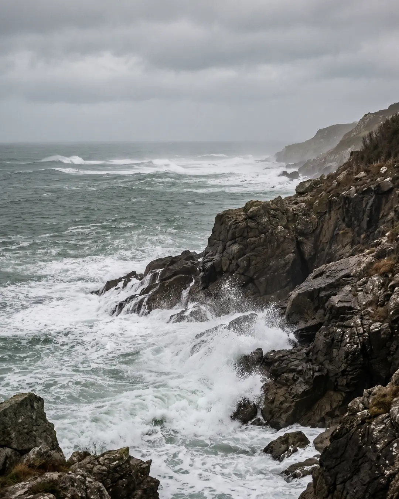
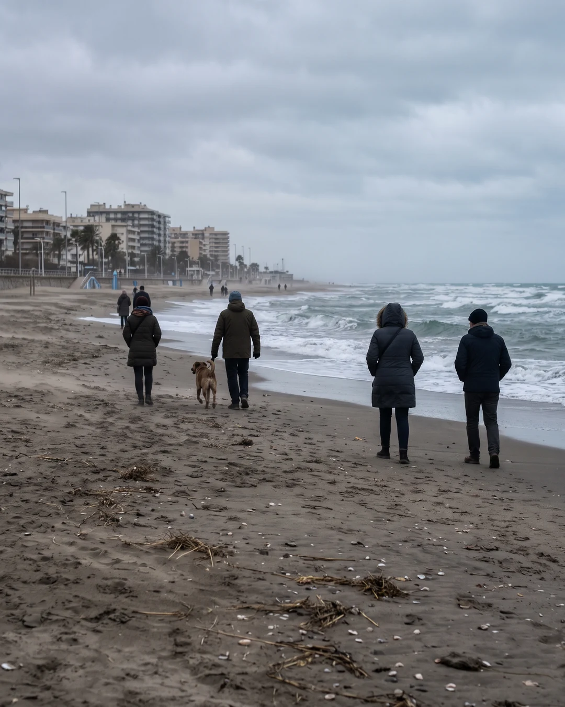
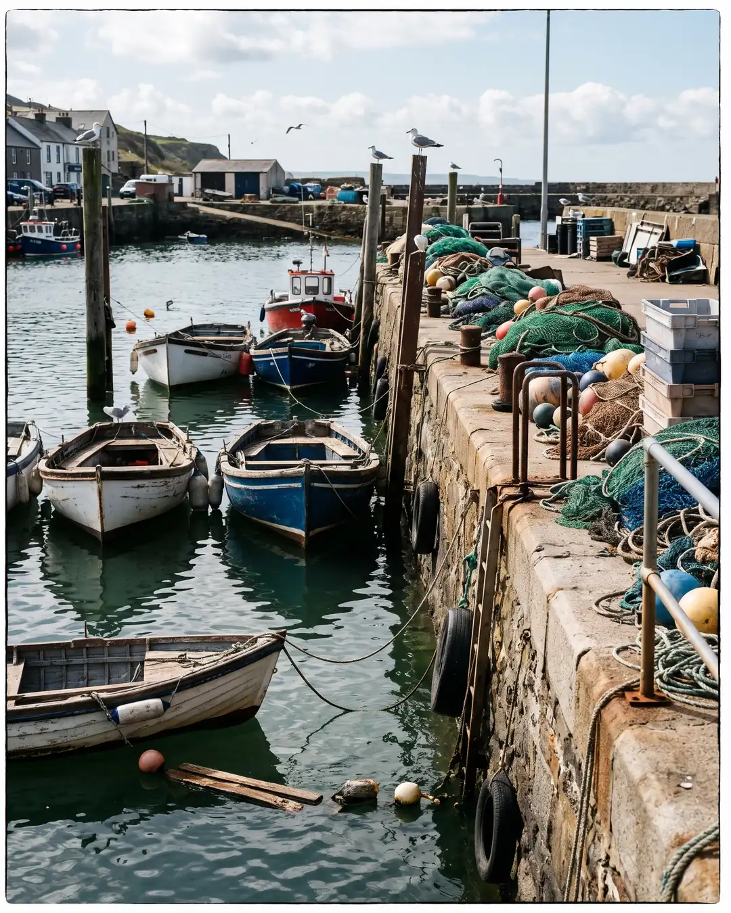

Case #22 · Sea
About this case
Case #22 is closed. It was the daily case for November 22, 2026 and its theme was Sea. The detectives of that day had two challenges: five images to judge as real photographs or AI-made pictures, and five one-sentence claims to judge as facts or fakes.
- AI-generated images: 4 of 5
- Fake claims: 2 of 5
Below you will find every answer. Each AI-generated image comes with the prompt that produced it, and each claim with the truth behind it and the details worth remembering, so you can check what you missed.
One of the fakes: “Some orcas have learned to imitate boat engines perfectly to attract food.” The truth: There is no evidence that orcas imitate engines, and the noise would scare off most of their prey.
Want to sharpen your eye? Read our guide to spotting AI images or our guide to spotting fake news, then play today's case.
Images
-
Image 1

AI
The suspect's confession
Rough sea breaking against the rocks of a cliff on a cloudy day, with white foam leaping and splashes frozen in the air; 200 mm telephoto lens, muted gray and greenish colors.
-
Image 2

REAL
Real photograph
-
Image 3

AI
The suspect's confession
The calm sea at dawn seen from an empty beach, with the sun still low behind a layer of thin clouds and some seaweed and shells on the wet sand in the foreground; 35 mm at f/8, slightly tilted horizon.
-
Image 4

AI
The suspect's confession
A beach in winter with the sea in the background and a few people in coats walking along the shore, one of them with a dog; overcast sky, wind lifting the sand and blurred buildings in the background.
-
Image 5

AI
The suspect's confession
A small fishing harbor with wooden boats moored and rocking on the water, nets piled on the pier and seagulls perched on the posts; mid-morning light and uneven reflections on the water.
Fact or Fake
-
Claim 1
FAKE “Some orcas have learned to imitate boat engines perfectly to attract food.”
There is no evidence that orcas imitate engines, and the noise would scare off most of their prey.
- Orcas do have complex dialects and can mimic some sounds.
-
Claim 2
FAKE “The biggest wave ever measured did not happen at the surface but beneath the Banda Sea in 2021.”
The biggest wave ever recorded was a surface one: a 524 m (1,719 ft) megatsunami in Lituya Bay, Alaska, in 1958.
- A landslide triggered it.
- Internal waves in the South China Sea can exceed 100 m (328 ft).
-
Claim 3
FACT “There are underwater "brine pools" that are deadly to most creatures that enter them.”
Their extremely salty water is so dense it does not mix with the ocean, lacks oxygen and holds toxic gases such as hydrogen sulfide.
- One famous example is the "Jacuzzi of Despair" in the Gulf of Mexico.
-
Claim 4
FACT “The world's oceans contain roughly 20 million metric tons (22 million US tons) of gold.”
Scientific estimates agree, but it is dissolved in seawater in microscopic amounts, so extracting it is unviable today.
- It is not in nuggets or sunken chests.
-
Claim 5
FACT “The longest mountain range on Earth is underwater.”
It is the mid-ocean ridge system, about 65,000 km (40,400 mi) long, far longer than any land range such as the Andes.
- The Mid-Atlantic Ridge is part of it.
- It forms where tectonic plates meet.